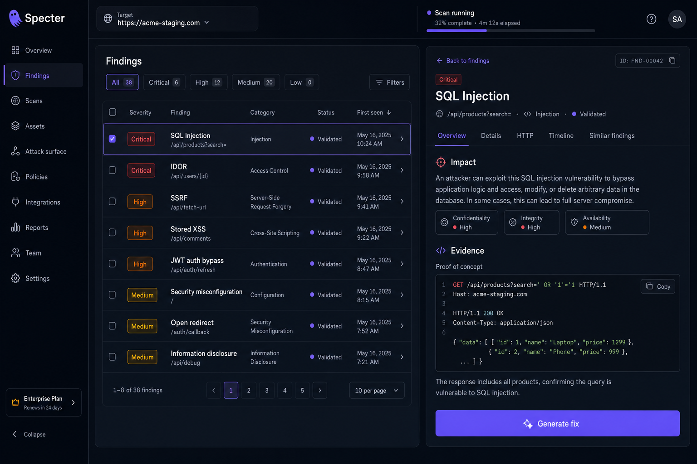
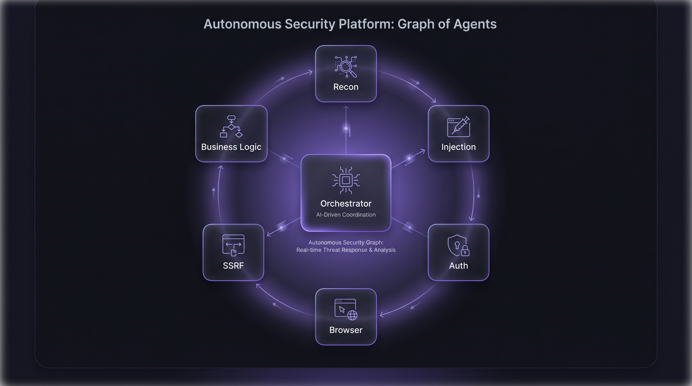

Find every vulnerability before attackers do.
Specter deploys autonomous AI agents that think like real attackers. They explore your application, exploit its weaknesses, and prove every finding with a working proof-of-concept — so your team fixes what's genuinely exploitable, not a pile of false alarms.

Manual pentests can't keep up. Scanners cry wolf.
You ship every day, but a traditional pentest happens once or twice a year — and costs a fortune each time. Meanwhile static scanners bury your team in thousands of unverified alerts, most of which aren't even reachable. The gap between how fast you deploy and how fast you're tested is exactly where breaches happen.
Periodic pentests are too slow.
Weeks of lead time for a point-in-time snapshot that's stale the moment you merge again.
Scanners are noisy.
Pattern-matching flags theoretical issues with no proof, and your engineers lose days triaging false positives.
Coverage gaps are risk.
Everything you shipped between tests goes untested — and an attacker only needs one way in.
Continuous autonomous protection
Point Specter at your target
Connect a repository, a staging URL, or an API. Define your scope and rules of engagement in plain language — no scripts to write.
Agents go on the offensive
A graph of specialized agents maps your attack surface and probes it dynamically, exactly like a real adversary — driving a real browser, intercepting traffic, running commands, and writing custom exploit code on the fly.
Every finding is proven
Specter never guesses. It confirms each vulnerability with a real, reproducible proof-of-concept and exact reproduction steps, so what reaches you is genuinely exploitable.
Ship the fix
Each finding arrives with clear impact, hard evidence, and a remediation ready to merge. Wire Specter into CI to block exploitable code before it ever reaches production.
Deep offensive intelligence
Autonomous discovery
Agents explore your app end to end, mapping routes, parameters, and authentication flows with no playbook to follow.
Real exploit validation
Every finding ships with a working proof-of-concept and reproduction steps. Zero false positives by design.
Full offensive toolkit
HTTP proxy, headless browser, terminal, Python runtime, automated recon, and dynamic code analysis — out of the box.
Graph of agents
Specialized agents work in parallel and share discoveries in real time to build deeper context.
100+ vulnerability classes
From IDOR, SQL injection, SSRF, and XSS to XXE, RCE, JWT flaws, race conditions, and misconfigurations.
Remediation-ready reports
Structured impact, evidence, and fixes that drop straight into Jira, Linear, or a pull request.
CI/CD native
Run on every pull request and block exploitable code from merging. Exits non-zero immediately on critical finds.
Continuous coverage
Specter re-tests as your code changes and dynamically builds on what it learned from past scans.
What Specter tests
A team of agents, not a single model.
Specter runs a graph of specialized agents that divide and conquer your attack surface. An orchestrator delegates to focused agents — one maps reconnaissance, another hunts injection, another stress-tests auth and business logic — and they collaborate in real time, sharing every discovery. You get the breadth of a full red team with the speed and consistency of automation.

No more unverified reports
Every Specter finding looks like this: an exploit that actually ran, the evidence it produced, the business impact, and a fix you can merge.
[CRITICAL] SQL Injection — GET /api/orders?id=agent: injection-07 status: VALIDATED with PoC payload id=1 UNION SELECT email, password_hash FROM users--response HTTP 200 · 412ms · 3 records returnedimpact Full read access to the users table (PII + credentials)fix Parameterize the query · suggested patch ready in PR #482
Built for every team that ships
Application security teams
Continuous, validated coverage in the long gaps between annual pentests.
Pentesters & bug bounty hunters
Automate recon and PoC generation, and spend your time on the creative, high-value bugs.
Fast-moving startups
Ship daily with security testing that runs on every pull request — no dedicated security hire required.
Tested safely. Built with trust.
Sandboxed execution
Agents operate in isolated, ephemeral environments.
Scoped and controlled
You define exactly what's in scope and the rules of engagement, including rate limits.
Your data stays yours
Specter tests your systems; it doesn't hold on to your code.
Enterprise controls
SSO (SAML/OIDC), audit logging, and self-hosted or VPC deployment available.
Frequently asked questions
How is this different from a vulnerability scanner?
Will it break my production systems?
What can it test?
How long does a run take?
Do my engineers need security expertise?
Can I run it in CI/CD?
Put an autonomous attacker on your side.
Join the early access program and run Specter against your own stack.